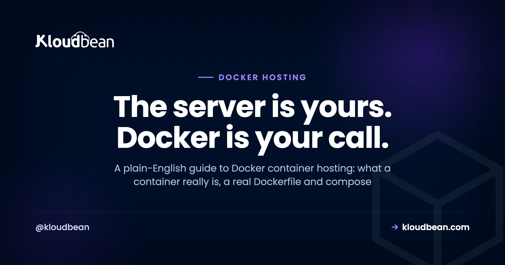

Docker Container Hosting Without the Kubernetes Detour

You've got a Dockerfile, the container runs fine on your laptop, and now it needs a real home. This is where a lot of people take a wrong turn. They hear "containers in production" and assume it means Kubernetes, so they lose a week to cluster management for an app that a single server would have run happily.
Docker container hosting doesn't have to be complicated. The right home depends on how many containers you run and how independently they scale, and for most projects the answer is refreshingly small. This is the honest version: what a container actually is, a real Dockerfile and compose file, where a container should live, and the question most guides skip. Do you even need Docker?
A container is your app plus its runtime and dependencies packaged into one image, so it runs the same everywhere. Hosting it means running that image somewhere always-on. One container? Run it on a server. A few? Use managed services for the database and cache, or a docker compose stack on one box. Many services scaling independently across machines? That's when Kubernetes earns its keep, and it's a bigger team's problem. And plenty of standard apps don't need Docker at all, because a managed runtime deploys them straight from Git.
What a container actually is
Strip away the whale logo and a container is a simple idea. You take your app, its language runtime, its libraries, and a slice of the operating system it expects, and you package all of it into a single image. That image is a frozen, self-contained snapshot. A container is just that image running as an isolated process on a host.
The payoff is that "works on my machine" stops being a shrug. The image carries its environment with it, so the same thing that ran on your laptop runs on the server, on a teammate's machine, and in CI, byte for byte. No more chasing a missing system library or a Node version mismatch at 2am.
One nuance people miss: a container isn't a virtual machine. It doesn't boot a whole guest OS. It shares the host's Linux kernel and isolates at the process level, which is why containers start in a fraction of a second and you can run several on a modest box. Here's the picture that makes the rest click:
A Dockerfile, in plain terms
The Dockerfile is the recipe for the image. It says which base to start from, what to copy in, what to install, and what command to run. A minimal one for a Node app:
# Dockerfile
FROM node:20-slim
WORKDIR /app
COPY package*.json ./
RUN npm ci --omit=dev
COPY . .
EXPOSE 3000
CMD ["node", "server.js"]Build it into an image, then run the image as a container:
docker build -t myapp .
docker run -d --env-file .env -p 3000:3000 myappThat --env-file .env matters. Your secrets and config should be passed in at run time, not baked into the image. An image can end up in a registry or a teammate's laptop, and you don't want a database password riding along inside it. Same rule as everywhere else: config in the environment, not the artifact. We cover the whole pattern in environment variables, done right.
docker compose, when you have a few pieces
One container is the common case. But say your app also wants a Postgres and a Redis alongside it in development. Running three docker run commands by hand gets old fast. docker compose describes the whole set in one file and starts them together:
# docker-compose.yml
services:
app:
build: .
ports: ["3000:3000"]
environment:
DATABASE_URL: postgres://app:secret@db:5432/app
depends_on: [db, redis]
db:
image: postgres:16
volumes: ["dbdata:/var/lib/postgresql/data"]
environment:
POSTGRES_PASSWORD: secret
redis:
image: redis:7
volumes:
dbdata:docker compose up -dCompose is a joy for local development, because it spins up a whole stack that matches production with one command. In production it's fine for a small app on a single server. It is not orchestration, and that's the point. It's the calm middle ground between "one container" and "a cluster."
The honest question: do you actually need Docker?
Here's the part the whale-branded tutorials skip. Docker is genuinely useful, and it's also frequently cargo-culted. If your app is a standard Node, Python, PHP, Ruby, or Java app, a managed platform can run it straight from your repository, handle the runtime, and keep it alive, with no Dockerfile for you to write or maintain.
My honest opinion after watching a lot of people ship: reach for Docker when you have a real reason, not because a blog post implied you're unprofessional without it. The reasons that actually justify it:
- Awkward system dependencies. Your app needs a specific system library, a native binary, ImageMagick, ffmpeg, an odd runtime version. Packaging that into an image is cleaner than fighting the host.
- Local dev parity for a multi-service app. A team that wants one
compose upto boot the whole stack identically on every laptop gets real value. - You already maintain the Dockerfile. If it exists and works, keep it. No need to rip it out.
And the times it's just overhead: a plain web app with ordinary dependencies, a solo project, a prototype you want live this afternoon. There, a Dockerfile is a file to maintain and a build to debug for no benefit you'll feel. Here's the trade laid out plainly:
| The Docker path | A native managed runtime | |
|---|---|---|
| Environment | You define it in a Dockerfile you maintain | Provided and patched for you |
| Build | You build the image (locally or in CI) | Built from your Git repo on push |
| Best when | Unusual system deps, multi-service parity | Standard Node/Python/PHP/Ruby/Java apps |
| Overhead | A file and a build pipeline to look after | Almost none; you push code |
| Portability | Runs anywhere Docker runs | Standard code, runs on any Linux host |
Neither is "more professional." They're different tools. Containers are a tool, not a rite of passage.
Docker container hosting, from one container to many
Match the machinery to the count. Most people are further left on this scale than the internet makes them feel.
One container
Run it on a server. That's the whole answer. A single containerized app does not need orchestration. You run the image on an always-on Linux box, keep the process supervised so it restarts on crash, and put a domain and SSL in front. If someone insists a single container needs a cluster, they're selling you complexity you can skip. A long-running worker with no inbound web traffic, a chat bot or a queue consumer, is the same shape (one process on a server); the always-on bot hosting guide walks that worker variant end to end.
A few containers (app + database + cache)
Two clean options, neither of them Kubernetes. Either run your app and use managed services for the stateful pieces (a managed database, a managed Redis) rather than running those in containers you babysit, which is usually the better call. Or run a docker compose stack on one server if you genuinely want everything containerized. Both keep you on a single box. If those are several distinct apps rather than one app's dependencies, hosting multiple apps on one server covers keeping them cleanly isolated.
Many services that must scale independently
Now orchestration earns its place. Many services, each scaling on its own, self-healing across several machines, rolling out continuously: that's what Kubernetes is built for, and it's genuinely good at it. But be honest about whether you're there. The number of projects that think they need Kubernetes dwarfs the number that do. Most small apps don't need it, and I'll say that plainly. Reach for orchestration when doing without it actually hurts, not preemptively.
How this works on Kloudbean
Kloudbean's angle is a little different from the container-first platforms, and it's worth being precise, because there's a lot of hand-waving out there. You get a managed Linux server that you fully control. Two honest paths sit on top of it.
The native path, which most people should use. Kloudbean runs managed runtimes for Node, Python, PHP, Ruby, and Java. Connect a Git repo and it builds and deploys your app on every push, streams the build log live, keeps the process running, and puts SSL in front. No Dockerfile to write or maintain. For a standard app, that removes the very reason a lot of people reached for Docker in the first place.

The do-it-yourself container path. Because it's a real server you control, you can SSH in, install Docker, and run your own containers or a docker compose stack, exactly as you would on any Linux box. You manage those containers yourself. That's the honest boundary worth stating clearly: running your containers is something you do on the server, not a one-click managed build button. If a Dockerfile is central to how you work, you're free to use it. If it isn't, the native runtime is less to maintain.
Either path, the same rule holds for state. Your database goes in a managed database and your files go in object storage, so nothing important lives inside a container. And if you're truly at the scale that needs Kubernetes, autoscaling, and orchestration across many machines, that's Kloudbean's enterprise territory, set up for you, not a switch a solo developer should be flipping alone.
The rule that outranks every hosting choice
Wherever your container lands, one principle matters more than the hosting decision itself: containers are disposable. A container can be stopped, replaced, or rebuilt at any moment, and that's a feature. But it means anything written inside a container is gone when it's replaced.
So your persistent data has to live outside the container. Your database goes in a managed database, not inside the app container. User uploads go to object storage, not the container's disk. Any file you must keep gets a real volume, never the ephemeral filesystem. Get this right and you can redeploy and restart freely with zero data loss. Get it wrong and a routine redeploy quietly wipes something you needed. A common mistake we see: a container writing uploads to a local folder, then losing every file the next time it's replaced. Treat the container as replaceable and the data as precious, kept somewhere the container isn't.
What about free Docker hosting?
People search for free Docker hosting, and it's a fair thing to want. Just know the catch: a container still needs a home that stays on. Free tiers that sleep idle apps will stop your container between requests, which is fine for a demo and a problem for anything real. For learning and throwaway projects, free is great, and free app hosting options covers the honest set. For something you actually depend on, a small always-on server costs about what running a side project should, and it doesn't nap on you.
The honest limits
Underneath all of this, it's Linux. A container is your app running on a Linux host, and Kloudbean gives you that host plus managed runtimes, managed databases, and object storage around it. "Managed" means the server, the stack, SSL, patching, and backups are handled, while your image, your code, and your data stay yours to move whenever you like. What you won't find here is a one-click managed Kubernetes for general accounts (orchestration at that scale is an enterprise setup), or a Windows container stack. For running a container, or skipping Docker entirely on a standard app, a server you control covers it without the cluster tax.
Use exactly as much machinery as you need. No more.
Run a standard app straight from Git with no Dockerfile, or take a Linux server you control and run your own containers on it. Start free at kloudbean.com; sizes and plans on pricing.
Managed runtimes · Git deploy · Managed databases · Object storage · A server you own · Free trial
FAQ
Where should I host a Docker container?
For a single container, run it on an always-on server. No orchestration needed. For a few containers (app plus a database and cache), use managed services for the stateful pieces with your app as a container, or a docker compose stack on one server. Save Kubernetes for many services that must scale independently across machines, which is a larger team's problem.
Do I need Kubernetes to run Docker containers?
No, not for most projects. Kubernetes is built for many services scaling independently across multiple machines. A single container runs fine on one server, and a few containers run fine with compose or managed services. Adopt Kubernetes only when managing many services by hand becomes a real, present pain, not before.
Does Kloudbean build and run my Dockerfile for me?
Not as a managed one-click pipeline. The managed, hands-off path on Kloudbean is the native runtimes: connect a Git repo and it builds and runs your Node, Python, PHP, Ruby, or Java app with no Dockerfile. If you want to use Docker, you get a full Linux server you control, so you can SSH in, install Docker, and run your own containers or a compose stack yourself.
Do I even need Docker for my app?
Often not. Docker gives you a reproducible environment, which is valuable for unusual system dependencies or multi-service local parity. But a standard Node, Python, or PHP app can deploy straight from your repository on a managed runtime with no Dockerfile at all. Use Docker when it earns its keep, skip it when a plain deploy does the job.
How do I deploy a single Docker container to production?
Run the image on an always-on server, pass config in with an env file rather than baking secrets into the image, keep the process supervised so it restarts on crash, and put a domain and SSL in front. Keep persistent data in a managed database and files in object storage so a redeploy never wipes them.
Can I run several containers on one server?
Yes. docker compose defines and runs several linked containers together on a single server, which is the natural setup for a small multi-container app. Alternatively, run your app as a container and use managed services for the database and cache. Either keeps you on one box without a cluster.
Where does a container's data go so it survives a redeploy?
Outside the container. A container's own filesystem is disposable, so anything written inside is lost when it's replaced. Put your database in a managed database, user uploads in object storage, and any file you must keep on a real volume. Then you can redeploy freely without losing data.
Is free Docker hosting good enough for a real app?
For learning and throwaway demos, sure. For anything you depend on, be careful: free tiers that sleep idle apps will stop your container between requests, so it won't stay reliably online. A small always-on server is inexpensive and keeps the container running around the clock.